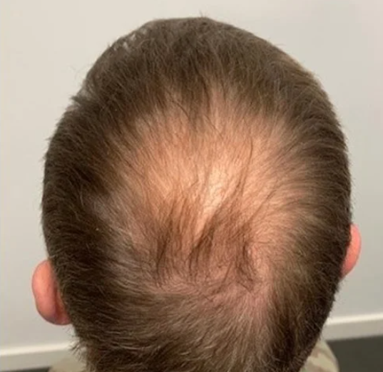
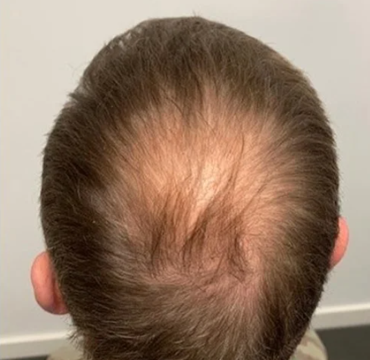
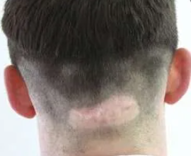
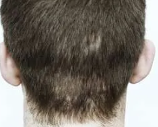
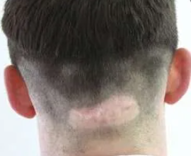
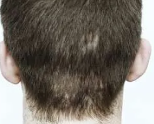

Haarlijn Correctie
Een terugtrekkende haarlijn kan je uiterlijk en zelfvertrouwen flink beïnvloeden. Gelukkig is er een subtiele en effectieve oplossing: haarlijn pigmentatie.
Bij een haarlijncorrectie brengen we met precisie natuurlijke pigmenten aan op de hoofdhuid, waardoor de illusie van een vollere, strakkere haarlijn ontstaat. Deze behandeling is ideaal voor mensen met inhammen, een M-vormige haarlijn of beginnende kaalheid.
We werken volledig op maat — afgestemd op de vorm van je gezicht, je huidskleur en jouw wensen. Of je nu kiest voor een strakke, moderne haarlijn of juist een zachtere, natuurlijk ogende overgang: het resultaat is direct zichtbaar en langdurig.

 


Verdikking van Dunner Wordend Haar
Dunner wordend haar kan ervoor zorgen dat je kapsel zijn volume en uitstraling verliest — ook al heb je nog (veel) haar. Met Scalp Micropigmentatie (SMP) bieden we een slimme manier om visueel meer dichtheid te creëren.
Bij deze techniek brengen we kleine, haarstoppel-achtige pigmenten aan tussen je bestaande haren. Hierdoor lijkt je haardos optisch voller, zonder dat er daadwerkelijk meer haar groeit. Ideaal voor mensen met diffuse haaruitval, een doorschijnende kruinof dunnere zones bovenop het hoofd.
Volledige SMP
Bij volledig haarverlies of als je bewust kiest voor een geschoren look, biedt Scalp Micropigmentatie (SMP) een krachtige oplossing. Met deze techniek creëren we de illusie van een strak geschoren kapsel — perfect egaal en vol.
Tijdens de behandeling brengen we met uiterste precisie duizenden microstoppels aan op de hoofdhuid. Het resultaat? Een realistisch geschoren look die perfect aansluit bij jouw gezichtsstructuur en stijl. Geen kale plekken, geen glimmende hoofdhuid — wél een verzorgde, zelfverzekerde uitstraling.
Deze behandeling is ideaal voor: Volledige kaalheid (alopecia, erfelijke kaalheid) en mensen die dagelijks hun hoofd scheren
 



Littekencamouflage met SMP
Littekens op de hoofdhuid — bijvoorbeeld van een haartransplantatie (FUT/FUE), een ongeluk of medische ingreep — kunnen opvallend zichtbaar zijn, vooral bij kort haar. Met Scalp Micropigmentatie (SMP) kunnen we deze littekens subtiel camoufleren en laten opgaan in het omringende haar of de hoofdhuid.
Deze behandeling vereist ervaring en precisie, want littekenweefsel reageert anders dan normale huid. Maar met de juiste aanpak is het resultaat indrukwekkend.
Geschikt voor FUE/FUT-transplantatielittekens, brandwonden en andere hoofdhuidlittekens.